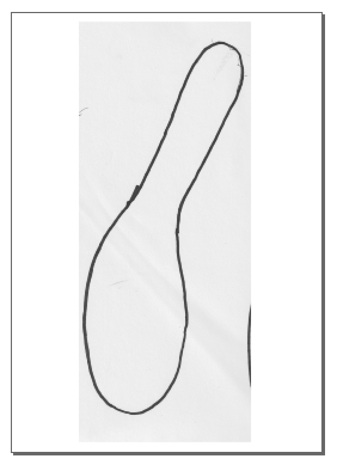
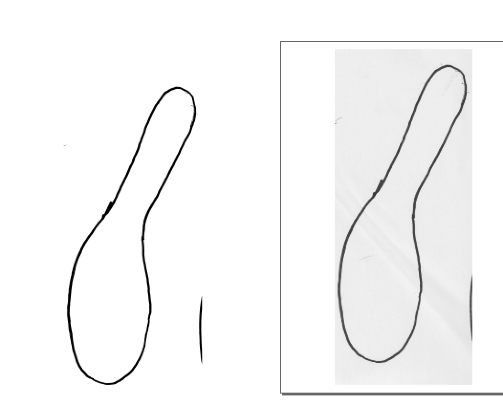
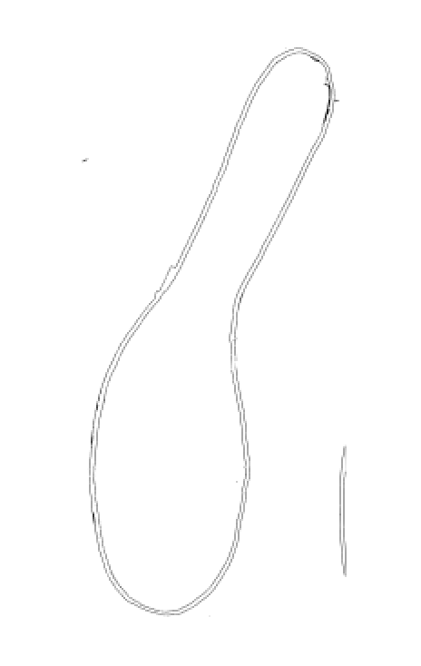
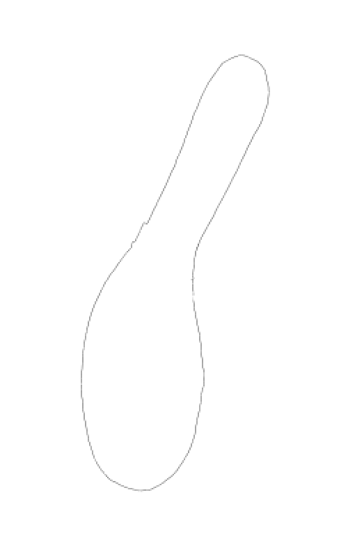
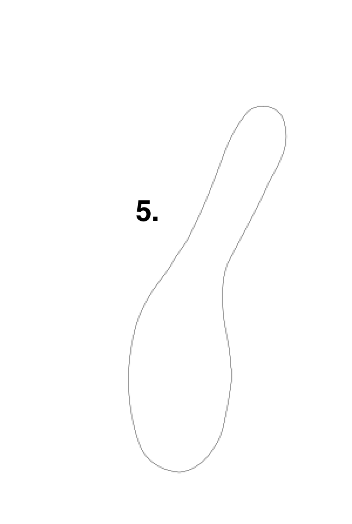
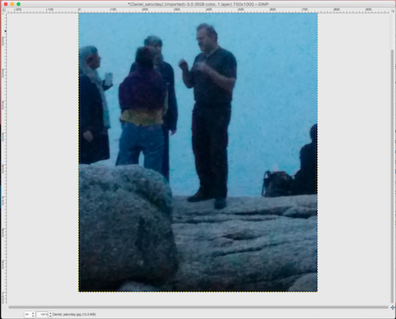
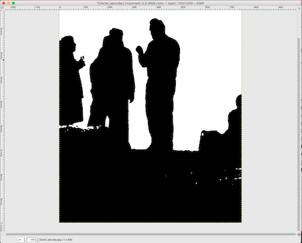
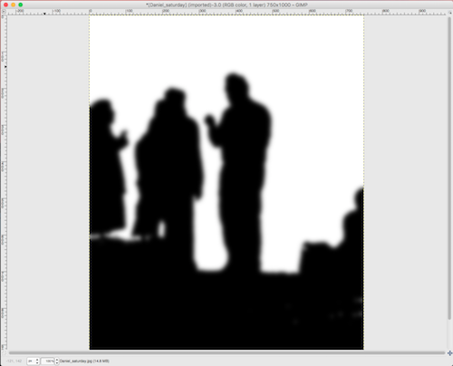
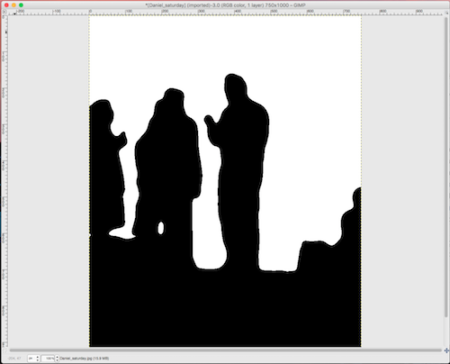

Inkscape is open-source vector graphics software, used widely and supported online by its users. Download here.
Here is a detailed tutorial, starting from the basics, by Mark Crutch.
Below are the steps for converting a bitmap picture (for instance of a drawing) into a vector format in Inkscape.

1. Import bitmap of sketch into Inkscape.

2. Path --> Trace Bitmap. Open dialog box, make any adjustments needed, and hit "OK"
Now you can select the vector paths that you created and move them so that you can see them. (or just delete the bitmap). In this picture, the vectors are on the left and the original bitmap on the right.

3. Select the vector paths. Remove fill color, make lines visible by giving them a color.

4. Break apart the paths (Path --> Break Apart) and delete the extra segments and the inside trace of the original line.

5. Path --> Simplify. Repeat as needed to smooth the path. Export as dxf file.
A bit of GIMP for processing a photograph for vinyl cutting.
GIMP is an open-source image processing program, with capabilities similar to Photoshop. Website here.
Below are the steps for converting a photograph into a black-and-white png ready to vinyl-cut.

1. Import image into Gimp. This is a jpeg. Color picture of Daniel and friends.

2. Under Colors, choose Threshold. Adjust to get the shape that you want.

3. Apply Filter --> Blur (Gaussian). I chose 20px in this case.

4. Apply Color --> Threshold again to sharpen up borders. Repeat as necessary, or go back and change the nature of your blur to get the level of detail that you want.
Now this image can be exported as a png bitmap, imported into Inkscape, or other software, and traced to createa vector file for laser cutting or vinyl-cutting.